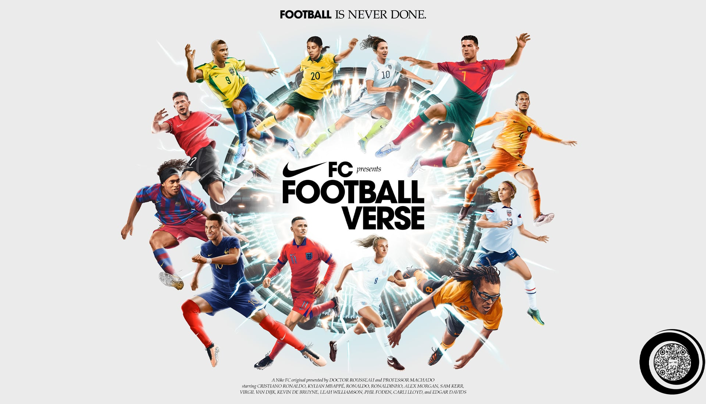
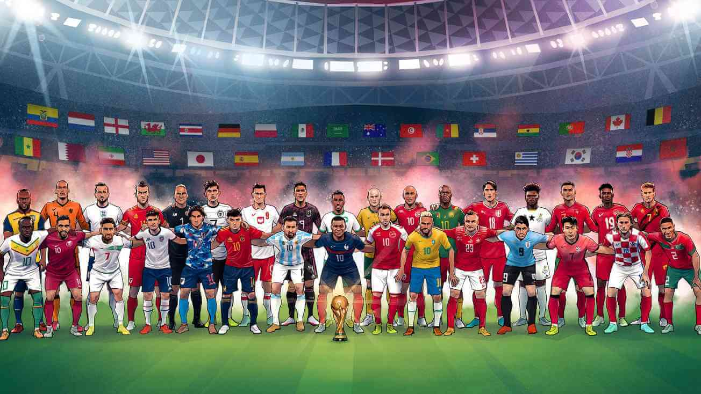
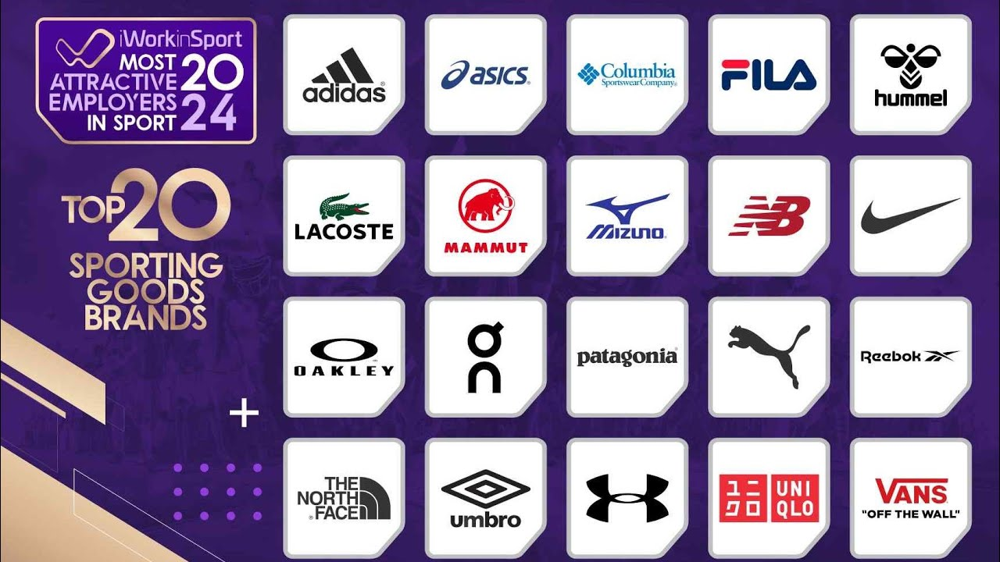
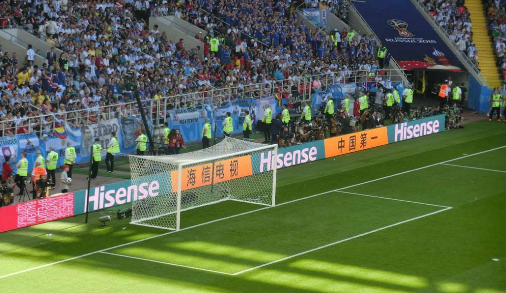
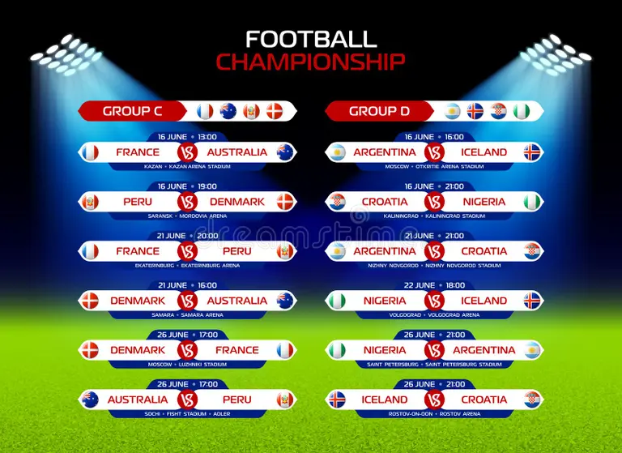

About football
Football can mean different things depending on the country: In most of the world, football means soccer — played with a round ball, famous leagues like the Premier League and tournaments like the FIFA World Cup. There’s also Australian Football League and rugby football variants.
Football is one of the most popular sports in the world, loved by millions of people across different countries. It is a game played between two teams, with each team trying to score goals by kicking a ball into the opponent’s net. Football is not only exciting to watch but also helps players stay healthy, active, and disciplined. Famous footballers like Lionel Messi and Cristiano Ronaldo have inspired many young people to play the sport. Football teaches teamwork, confidence, and sportsmanship because players must work together to win the game. International tournaments such as the FIFA World Cup bring nations together and create unforgettable moments for fans. Whether played on a large stadium field or in a small street with friends, football brings joy, energy, and unity to people everywhere.
In the United States, football usually means American football — the sport played in the National Football League.

Teams
A football team is a group of players who play together in a football match. Each team usually has 11 players, including one goalkeeper, defenders, midfielders, and forwards. The players work together to score goals and stop the other team from scoring. Teamwork is very important in football because players must pass the ball, communicate, and support each other during the game. Famous football teams like Real Madrid, FC Barcelona, and Manchester United have many skilled players and millions of fans around the world. Football teams practice regularly to improve their skills, fitness, and understanding of the game.
- Real Madrid
- FC Barcelona
- FC Barcelona
- Liverpool F.C.
- Paris Saint-Germain F.C.
- Bayern Munich
- Brazil national football team
- Argentina national football team

Branding
Football branding is an important part of the sport because it helps teams create a strong identity and connect with fans around the world. Football clubs use logos, team colors, jerseys, slogans, and social media to promote their brand. Famous teams like Real Madrid, Manchester United, and FC Barcelona are known not only for their performance but also for their powerful global brands. Branding in football also includes sponsorships, advertisements, fan merchandise, and stadium experiences. A strong football brand attracts more supporters, business partnerships, and media attention, making the club more successful both on and off the field.
Branding in football plays a major role in making clubs famous and successful across the world. A football clubs brand represents its identity, history, culture, values, and connection with fans. Clubs use logos, team colors, jerseys, mascots, slogans, and stadium designs to create a unique image. Popular clubs such as Real Madrid, FC Barcelona, Manchester United, and Liverpool F.C. have built strong global brands through years of success, loyal supporters, and smart marketing strategies.

Football Ads
Football advertisements are used to promote football teams, tournaments, sports brands, and products to fans around the world. These ads appear on television, social media, stadium banners, jerseys, and online platforms. Big football clubs like Real Madrid and Manchester United often partner with famous brands for advertising campaigns. Companies use football ads because the sport has millions of loyal fans globally. Football advertisements usually feature famous players such as Lionel Messi, Cristiano Ronaldo, and Kylian Mbappé to attract attention and inspire fans. Sports brands create exciting commercials showing football skills, teamwork, passion, and competition. Major tournaments like the FIFA World Cup also include advertisements from international companies that promote products such as sportswear, shoes, drinks, and technology. Football ads help clubs and companies increase popularity, attract customers, and earn revenue. They also entertain fans and create emotional connections between football, brands, and supporters.

Football shcedule
Football team match schedules show when and where football teams will play their games during a season or tournament. The schedule includes the match date, time, stadium, and opponent team. Popular football clubs such as Real Madrid, Liverpool F.C., and Manchester United follow match schedules in leagues and international competitions. Football schedules help players prepare for matches, coaches plan strategies, and fans know when to watch their favorite teams play. Teams also have training sessions and travel plans arranged according to the match schedule. Proper scheduling is important in football because it keeps tournaments organized and ensures fair competition between teams.
contacts
Contact Us
📍 Football Stadium, Sports City
📞 +91 98765 43210
✉️ footballclub@email.com
Move To Top
MEDIA TAGS
THIS IS IFRAME
THIS IS AUDIO
THIS IS VIDEO
BLOCK LEVEL AND INLINE ELEMENT
FOOT BALL
Football can mean different things depending on the country: In most of the world, football means soccer — played with a round ball, famous leagues like the Premier League and tournaments like the FIFA World Cup. There’s also Australian Football League and rugby football variants.
BRANDING OF FOOTBALL
Branding in football plays a major role in making clubs famous and successful across the world. A football clubs brand represents its identity, history, culture, values, and connection with fans. Clubs use logos, team colors, jerseys, mascots, slogans, and stadium designs to create a unique image. Popular clubs such as Real Madrid, FC Barcelona, Manchester United, and Liverpool F.C. have built strong global brands through years of success, loyal supporters, and smart marketing strategies.
life stretched far beyond the familiar rhythm of tides
That night,
Arun couldnt sleep; the words echoed in his mind like waves crashing endlessly. Days turned into weeks, and the bottle became his quiet companion,
Frightened and thrilled him all click here
standing at the same shore where he had spent his entire childhood, Arun made a decision that frightened and thrilled him all at once: he would leave, not to abandon his home, but to understand it better by seeing the world beyond it